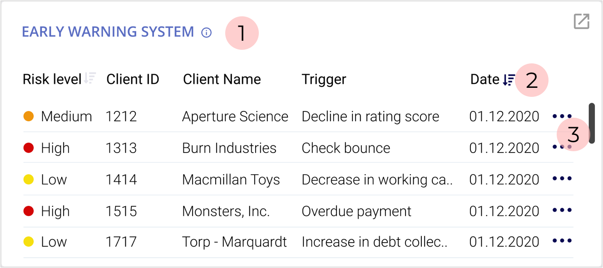

ABOUT THE PROJECT
Credit Lender's Dashboard helps credit lenders gain an instant understanding of their portfolio, monitor the essential information, and notice the changes at a glance to take immediate actions to avoid non-performing loans.
My Role
Credit lender's dashboard is a fictitious project designed to practice.
My objective was to generate a solution to a real-world problem experienced in my previous experiences.
I worked alone throughout the project, from user research to information architecture, wireframing and visual design.
Timeline
Nov 2020-Jan 2021
Tool
Figma
The Challenge
Credit Lenders are responsible for determining a business client's creditworthiness by analyzing their financial statements and business prospects to identify risks and mitigants.
But their job doesn't end once a loan proposal is approved. Lenders are also responsible for monitoring clients regularly and carefully to ensure repayments will be made on time.
Banks and especially lending departments are fast-paced environments. Lenders are often exposed to information overflood.
They need to analyze a vast amount of distributed data deeply and make data-driven decisions under time pressure.
The monitoring process mostly relies on credit lender's memory, skills, and awareness. While it causes the system to be unreliable, it also puts extra pressure on lenders.
The purpose of this project is to design a dashboard that will support them in achieving their goals.
DESIGN PROCESS
USER RESEARCH
I interviewed five of my former colleagues to get a qualitative insight into their primary activities, aims, and objectives.
User interviews revealed that, in general, they have two main purposes.
Based on the user interview insights, I narrowed my project scope in terms of the user definition and then determined specific problems and generated possible solutions.
USER PERSONA
The users are the credit lender associates and supervisors who work as a team to manage one particular portfolio. The difference between an associate a supervisor is experience level. They are all responsible for the same tasks, but the supervisor also mentors and trains the associate.
PROBLEM
1) Credit lenders overlook an important development unless they're informed by someone else, or run into it during regular scanning.
2) The necessary information is distributed to tools, so they need to spend time navigating between them to achieve a task.
SOLUTION
Design a dashboard that
- consolidates all necessary information in one screen
- highlights significant changes
- provides instant access to more specific information required for decision-making
So credit lenders will gain an immediate understanding of what is happening and what action to take.
STORYBOARD
Scenario 1: Monitoring an upcoming important repaymentWIREFRAMES
Key considerationsBefore diving into wireframing my solutions, I prepared a list to refer back to concentrate on the user's needs when I feel lost.
- Consolidate all the necessary information for decision-making in one screen.
- Provide instant access to the most visited information.
- Draw user's attention to the most important data.
- Use the valuable space (top-left or center ) for critical information.
- Organize the information in a way that easy to consume
USABILITY TESTS
I did usability tests with 5 credit lenders with different experience levels. They also managed portfolios with varying characteristics, so their needs, expectations, and requirements were not the same.
Test Results
Homepage
-3 participants wanted to be able to see and do more without expanding a block.
-The participants like to be able to see all information on one screen without scrolling it but it lacked providing instant access to necessary information like borrowers' financial condition, total limit, and exposure amount.
They still needed to navigate in the tool to decide what action is necessary.
Portfolio page
-All participants wanted to see the early warning system and repayment blocks on the homepage. 3 participants said they want to notice the clients with the high-risk level and unpaid installments.
-3 participants thought the portfolio page is long.
-2 participants thought the EWS and repayment blocks are too crowded.
4 participants only scanned the statistics and said they are nice to see. They lacked provide instant insight and meaning.
Notifications
-None of the test participants noticed the notification change on top right corner because they were focused on other part of the dashboard to achieve a task.
-Highlighting the new information by alerting the viewer is an important objective of this dashboard so it should be solved in some way.
The first design failed by missing some of the required information in the decision-making process.
Solution for drawing attention to new and important development didn’t work.
THE SECOND ITERATION
In the second iteration, I focused on rearranging the information blocks at home and portfolio pages and improving each card's interaction to enable the viewer to get more insight and take action.
Update: Anatomy of an information block
1) On hover, a helper text will appear to help the viewer interpret the information.
2) Sort and filter options are removed to keep it clean. The sort option is available for the ciritical categories.
3) Links to required information to decide like; financial statement overview, client page, the EWS page etc)
Update: New notification
1) To make the users more aware of a new notification, I changed the enabled notification icon by adding a rotation.
2) To provide more information about the new development, I added a preview so the users can decide to ignore it or check immediately. The preview slides in when first came and slides out after a few seconds to draw more attention to the new information with movement.
3) And because it draws more attention now, I needed an option to customize notifications so the user can decide what is crucial for her/him and won't get frustrated by getting too much warning.
USABILITY TESTS (2nd round)
For the second round of tests, I recruited 5 more credit lenders.
The main objectives were to observe
- which structure works better for the statistics
- how new arrangement of blocks works
-whether the participant was able to decide with the information provided
- how easy the interaction was
Test Results
Statistics
-All participants wanted to see the all information related to their portfolio on one page.
-3 participants didn't like to choose from the dropdown menu because it required more effort and time to check each category.
-Some categories like the product, segment, and facility type were considered irrelevant to their role.
-The participants stated that although provided as chart and list view, statistics don't bring value by itself.
-Instead of numbers shown on a chart, the participants were more concerned about the client list in each series, so they want to be able to dig deeper.
As a result, they didn’t prefer each option and needed a third solution for their needs.
Based on the feedback, I removed the stat page and some of the categories.
Redesigned statistics card would provide cleaner viewing experience but more interaction.
Performance
The test also revealed that the performance block would be more meaningful if labeled as a proposal overview. The quality is more important than the quantity when evaluating the performance.
Determining the performance of a credit lender is more complicated, and it is difficult to define metrics.
They were right on their point, and I also didn’t want to waste that valuable place for a nice to have information and moved it to the proposal page.
Client List
Three participants stated that viewing the top 25 client list is helpful and meaningful. But they wanted to have more options than the Top 25.
I added the most required categories like Top 50, leveraged clients, and the risk groups.
VISUAL DESIGN
-I used pale color as a background not to draw attention away from the critical data.
- Use of colors should be consistent. The same color shouldn't convey different meanings. If red is used for an alarming situation (like in the early warning system), it shouldn't be used with different purpose on the same screen.
CONCLUSION
In this project, I had the opportunity to improve my designing skills and learn about dashboard design principles by solving a real problem from my previous experience. It is surprising to know that it is still unsolved.
Challenges
- The biggest challenge was to fit all of the essential data in a fixed screen. It's necessary to understand the user's intention with the dashboard to find the best organization to satisfy all users' needs.
- There is a fine line between notifying users about the critical developments and desensitizing users by overloading them with frequent and many notifications.
- It was challenging to decide on the best display method to communicate the data presented.
Lessons
- Learning a new tool: During UX Bootcamp, I used Sketch for wireframing. Since some companies are switching to Figma, I used it for this project. It also enabled me to have an understanding of the advantages and disadvantages of each tool.
-To not get distracted and draw my attention away from the project scope, I noted my key considerations checklist and the problem statement and kept it in sight all the time. It enabled me to focus on the problem, not the solution.
-I believe for the problem I’m trying to solve, ethnographic field study would have provided more accurate insights. In this project, I had the opportunity to observe the difference between what people say they do and what they actually do.
Explaining how to do your job in theory is different than what you do in a time of crisis when you need to find efficient and practical solutions. To keep the challenge minimum, I conducted two usability tests and tried to get more insight while the people are interacting with my design.